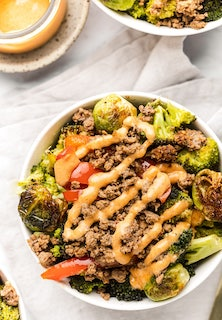

Beef and Veggie bowl

Description
you’ve spent any length of time on here or on my Instagram you probably already know that I’m a fan of piling all my food on top of roasted veggies. These Beef & Veggie Bowls with Comeback Sauce are a natural extension of that. Protein plus perfectly roasted veggies and a creamy sauce! What’s not to love?
I’m from Mississippi so Comeback Sauce is something I grew up with and I’m a big believer in the fact (yes, it’s a fact) that it makes everything better. You’ll be surprised by how easy it is to make! Just stir your ingredients together in a bowl. That’s it! Comeback Sauce is also available on the website as a standalone recipe too if you want to use it on other dishes (you do) or as a dip for fries (you do).
Ingredients
- BEEF
- 1 lb lean ground beef, I use 93/7. Can sub ground turkey.
- 1/2 tsp salt
- 1/2 tsp pepper
- 1/2 tsp chili powder
- VEGGIES
- 20 – 24 oz fresh broccoli, Sometimes I use two 12 oz bags and sometimes it’s two 10 oz bags. Just depends on where I’m shopping!
- 1 lb fresh brussels sprouts
- bell pepper, color of choice
- 3 tbsp olive oil, extra virgin
- 1/2 tsp salt
- 1/2 tsp pepper
- 1/2 tsp garlic powder
- COMEBACK SAUCE
- 1/2 cup mayo
- 1 tbsp ketchup
- 1 tsp lemon juice
- 1/2 tsp Tabasco
- 1/2 tsp paprika
- 1/2 tsp garlic powder
- 1/2 tsp ground mustard
- 1/2 tsp salt
Steps
- Preheat oven to 425 degrees.
- Cut any large broccoli florets in half or thirds. Add broccoli florets to baking sheet in a single layer.
- Trim the bottom of each brussels sprout and peel away the first layer of leaves. That’s where you usually see the dirt and any brown sprouts. Once this is done you’ll have beautiful little bright green sprouts. Add them to your baking sheet in a single layer beside the broccoli.
- Slice your pepper into strips. Spread in a single layer on baking sheet beside the other veggies.
- Drizzle olive oil over all veggies. Sprinkle with salt, pepper, and garlic powder. Bake for 20 to 25 minutes.
- While vegetables are roasting, add your ground beef (or turkey) to a skillet on the stovetop. Use your spatula to crumble the beef. Cook on medium high, stirring occasionally, until beef is browned. If your beef isn’t very lean you may want to drain the grease. Stir in salt, pepper, and chili powder.
- Add all Comeback Sauce ingredients to a bowl and stir together until well combined.
- To assemble, divide all roasted veggies into bowls. Top with cooked ground beef and Comeback Sauce. You’re ready to eat!